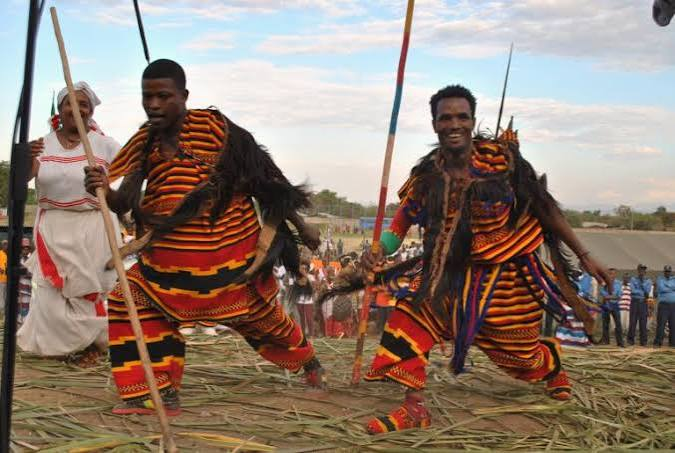

Southern Ethiopia · 06°50′ N
Come for the
landscape.
Stay for the soul.
Wolaita is a place of green ridges, generous tables and stories held close. Let a local rhythm shape your next journey.

WOLAITTA SODO / ETHIOPIA
A slower, richer kindof travel
Scroll to wander01 / 04
Mountain mornings ✦ Woven heritage ✦ The enset table ✦ Mountain mornings ✦ Woven heritage ✦ The enset table ✦

ROOTED
HERE
EST. FOREVER
HERE
EST. FOREVER
A living landscape
There is more
than one way
to feel at home.
In Wolaita, a welcome is never rushed. Walk ancient paths at Mount Damota, meet the hands behind every craft, and find a table where conversation is the main course.
Meet your local host →Choose your pace
Made for
meaningful days.
Three ways to move beyond the postcard—and into the texture of everyday Wolaita.
Gathering experiences…
“Travel here is not about seeing more. It is about noticing more.”
— A Wolaita welcomeLet’s begin
Your Wolaita
story starts here.
Tell us what calls to you. We’ll connect you with a local host to shape a thoughtful, unhurried trip.
✦ Personal local guidance✦ Culture-first experiences✦ Flexible, small-group planning